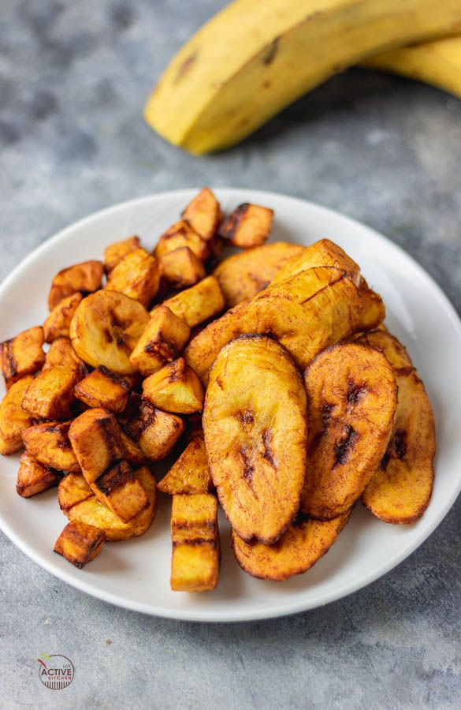

Dodo Recipes

Description
Dodo is a Nigerian snack featuring fried over-ripe plantains. If you've never had deep-fried plantains before,
you're in for a treat. This crispy and tender golden treat can be enjoyed on its own, or as a side dish.
The best part is that it's super easy to make. Ripe plantains (or bananas, if you can't get a hold of plantains)
and oil for frying are all you’ll need.
Ingredients
Produce
- 1 But firm plaintain, Ripe
Oils and Vinegar
Baking & Spices
Steps or Instructions
- Fill a pan or skillet about 2 inches deep with oil and heat over medium-high flame for about 5 minutes. The
oil will start "moving" when it's ready.
- Meanwhile, skin and cut plantain into slices about 1-inch thick. (I slice mine on a bias cut.) Add a sheet
of newspaper or paper towel to a plate to help drain oil from finished product and set aside.
- Add plantain slices to hot oil to cook. Depending on your pan size, you'll likely have to cook in batches to
avoid crowding the pan (which would slow down the cooking time).
- Allow the slices to cook for about 5 minutes then flip. The bottoms of each slice should be golden brown, if
not, flip back and cook a bit longer. Repeat on the opposite side then remove dodo from oil and place onto
paper towel-lined plate.
- Repeat with remaining slices until finished. Enjoy!